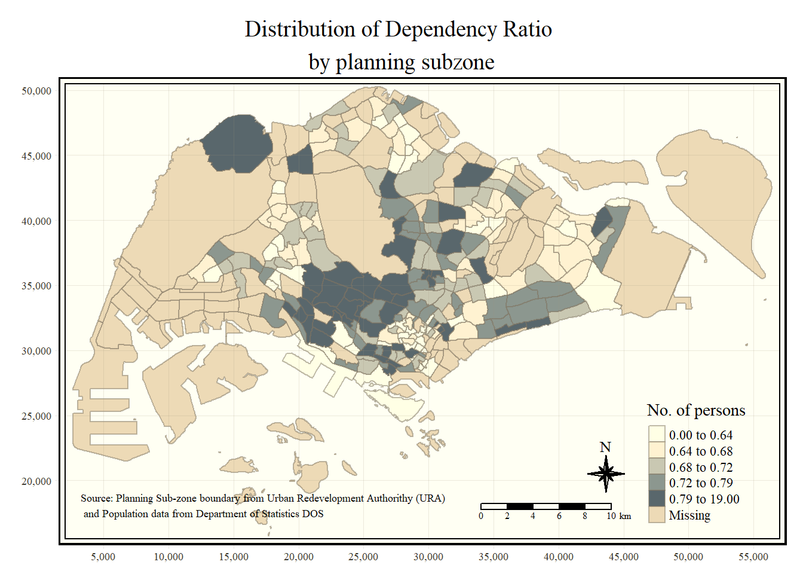

exploring the content of simple feature data frame by using Base R and sf functions
2. Introduction
Choropleth mapping involves the symbolisation of enumeration units, such as countries, provinces, states, counties or census units, using area patterns or graduated colors.
In this section, let us see how to plot functional and truthful choropleth maps by using an R package called tmap package. The world map shows distribution of population density among all countries.
3. Glimpse of Steps
Some of the important steps performed in this study are as follows
installing and loading required libraries into R environment
performing data wrangling using necessary transformation functions
Plotting a choropleth map using qtm() and tmap’s elements
Drawing a base map and leveraging its features
Plotting choropleth maps with built-in classification methods and custom breaks
4. Data
Following two data sets are used:
MP14_SUBZONE_WEB_PL - Master Plan 2014 Subzone Boundary in ESRI shapefile format. This is a geospatial data. It consists of the geographical boundary of Singapore at the planning subzone level.
respopagesextod2011to2020.csv - Singapore Residents by Planning Area / Subzone, Age Group, Sex and Type of Dwelling, June 2011-2020 in csv format. This is an aspatial data fie.
5.1 Installing libraries and Importing files
p_load function pf pacman package is used to install and load sf ,tidyverse and tmap packages into R environment. Let us import MP14_SUBZONE_WEB_PL shapefile into R as a simple feature data frame called mpsz using st_read() function. Next, we will import respopagsex2000to2018.csv file into RStudio and save the file into an R dataframe called popagsex using read_csv() function as shown in the code chunk below.
Rows: 984656 Columns: 7
── Column specification ────────────────────────────────────────────────────────
Delimiter: ","
chr (5): PA, SZ, AG, Sex, TOD
dbl (2): Pop, Time
ℹ Use `spec()` to retrieve the full column specification for this data.
ℹ Specify the column types or set `show_col_types = FALSE` to quiet this message.
5.2 Data Preparation
Data has to be prepared in such a way that choropleth mapping can be performed.
The data table should include the variables PA, SZ, YOUNG, ECONOMY ACTIVE, AGED, TOTAL, DEPENDENCY.
5.2.1 Data Wrangling
The code chunk first filters the year 2020 and performs the following
YOUNG: age group 0 to 4 until age groyup 20 to 24,
ECONOMY ACTIVE: age group 25-29 until age group 60-64,
AGED: age group 65 and above,
TOTAL: all age group, and
DEPENDENCY: the ratio between young and aged against economy active group
Some of the transformation functions used are as follows
pivot_wider() of tidyr package, and
mutate(), filter(), group_by() and select() of dplyr package
`summarise()` has grouped output by 'PA', 'SZ'. You can override using the
`.groups` argument.
5.2.2 Joining attribute and geo spatial data
We have to convert the values in PA and SZ fields to uppercase as the values of PA and SZ fields are made up of upper- and lowercase. On the other, hand the SUBZONE_N and PLN_AREA_N are in uppercase. Next, left_join() of dplyr is used to join the geographical data and attribute table using planning subzone name e.g. SUBZONE_N and SZ as the common identifier.
Warning: `funs()` was deprecated in dplyr 0.8.0.
Please use a list of either functions or lambdas:
# Simple named list:
list(mean = mean, median = median)
# Auto named with `tibble::lst()`:
tibble::lst(mean, median)
# Using lambdas
list(~ mean(., trim = .2), ~ median(., na.rm = TRUE))
This warning is displayed once every 8 hours.
Call `lifecycle::last_lifecycle_warnings()` to see where this warning was generated.
There are two ways of creating thematic map. They are
Plotting a thematic map quickly by using qtm().
Plotting highly customisable thematic map by using tmap elements.
5.3.1 Using qtm()
The easiest and quickest to draw a choropleth map using tmap is using qtm(). It provides a good default visualisation.The code chunk below will draw a cartographic standard choropleth map as shown below.
tmap_mode("plot")
tmap mode set to plotting
qtm(mpsz_pop2020, fill ="DEPENDENCY")
5.3.2 Using tmap elements
Although qtm() helps to create a thematic map easily, it lacks customisation. To draw a high quality cartographic choropleth map as shown in the figure below, tmap’s drawing elements should be used.
tm_shape(mpsz_pop2020)+tm_fill("DEPENDENCY", style ="quantile", palette ="Blues",title ="Dependency ratio") +tm_layout(main.title ="Distribution of Dependency Ratio by planning subzone",main.title.position ="center",main.title.size =1.2,legend.height =0.45, legend.width =0.35,frame =TRUE) +tm_borders(alpha =0.5) +tm_compass(type="8star", size =2) +tm_scale_bar() +tm_grid(alpha =0.2) +tm_credits("Source: Planning Sub-zone boundary from Urban Redevelopment Authorithy (URA)\n and Population data from Department of Statistics DOS", position =c("left", "bottom"))
5.3.3 Drawing a basemap
The basic building block of tmap is tm_shape() followed by one or more layer elemments such as tm_fill() and tm_polygons().
In the code chunk below, tm_shape() is used to define the input data (i.e mpsz_pop2020) and tm_polygons() is used to draw the planning subzone polygons
tm_shape(mpsz_pop2020) +tm_polygons()
5.3.4 Using tm_polygons()
To draw a choropleth map showing the geographical distribution of a selected variable by planning subzone, we just need to assign the target variable such as Dependency to tm_polygons().
tm_shape(mpsz_pop2020)+tm_polygons("DEPENDENCY")
5.3.5 Using tm_fill() and tm_border()
Actually, tm_polygons() is a wraper of tm_fill() and tm_border(). tm_fill() shades the polygons by using the default colour scheme and tm_borders() adds the borders of the shapefile onto the choropleth map.
The code chunk below draws a choropleth map by using tm_fill() alone.
Most choropleth maps employ some methods of data classification. The point of classification is to take a large number of observations and group them into data ranges or classes.
To define a data classification method, the style argument of tm_fill() or tm_polygons() will be used.
5.4.1 Choropleth maps with built-in classification methods - jenks
tmap provides a total ten data classification methods, namely: fixed, sd, equal, pretty (default), quantile, kmeans, hclust, bclust, fisher, and jenks. Out of all, the code chunk below shows a quantile data classification that used 5 classes.
Map layout refers to the combination of all map elements into a cohensive map. Map elements include among others the objects to be mapped, the title, the scale bar, the compass, margins and aspects ratios.
5.6.1 Map Legend
In tmap, several legend options are provided to change the placement, format and appearance of the legend.
other available styles are: "white", "gray", "natural", "cobalt", "col_blind", "albatross", "beaver", "bw", "watercolor"
5.7 Cartogram
tmap also also provides arguments to draw other map furniture such as compass, scale bar and grid lines.
In the code chunk below, tm_compass(), tm_scale_bar() and tm_grid() are used to add compass, scale bar and grid lines onto the choropleth map.
tm_shape(mpsz_pop2020)+tm_fill("DEPENDENCY", style ="quantile", palette ="Blues",title ="No. of persons") +tm_layout(main.title ="Distribution of Dependency Ratio \nby planning subzone",main.title.position ="center",main.title.size =1.2,legend.height =0.45, legend.width =0.35,frame =TRUE) +tm_borders(alpha =0.5) +tm_compass(type="8star", size =2) +tm_scale_bar(width =0.15) +tm_grid(lwd =0.1, alpha =0.2) +tm_credits("Source: Planning Sub-zone boundary from Urban Redevelopment Authorithy (URA)\n and Population data from Department of Statistics DOS", position =c("left", "bottom"))

5.8. Drawing multiple small choropleth maps
Small multiple maps, also referred to as facet maps, are composed of many maps arrange side-by-side, and sometimes stacked vertically.
5.8.1 Assigning values to aesthetic arguments
Let us create small multiple choropleth maps by defining ncols in tm_fill()
Warning in pre_process_gt(x, interactive = interactive, orig_crs =
gm$shape.orig_crs): legend.width controls the width of the legend within a map.
Please use legend.outside.size to control the width of the outside legend
6. Conclusion & Key Takeaways
In this exercise we have seen how to play with choropleth maps in detail starting from creating quick thematic maps using qtm() function to customising the asthetics od choropleth maps. We have also understood how to perform data classificatin and which one is suitable during the analysis. Further, lets deep dive into spatial weights in upcoming section. Stay tuned…..